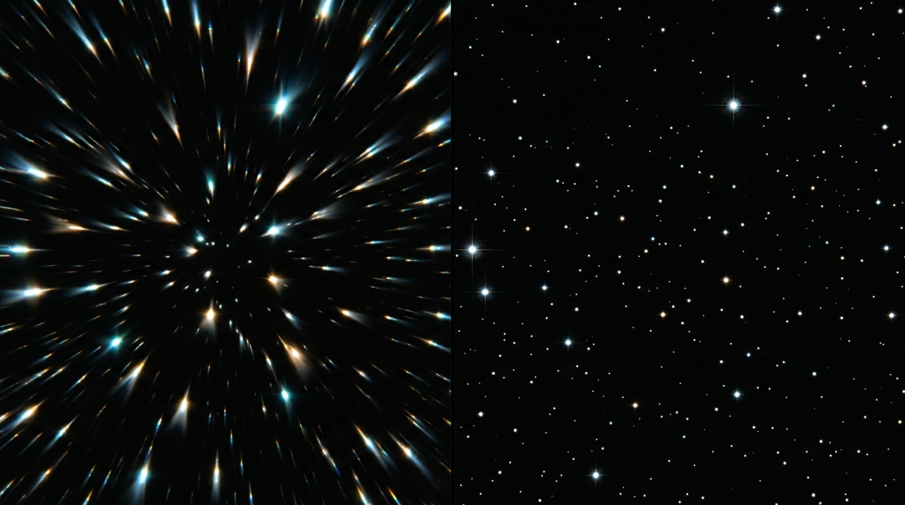
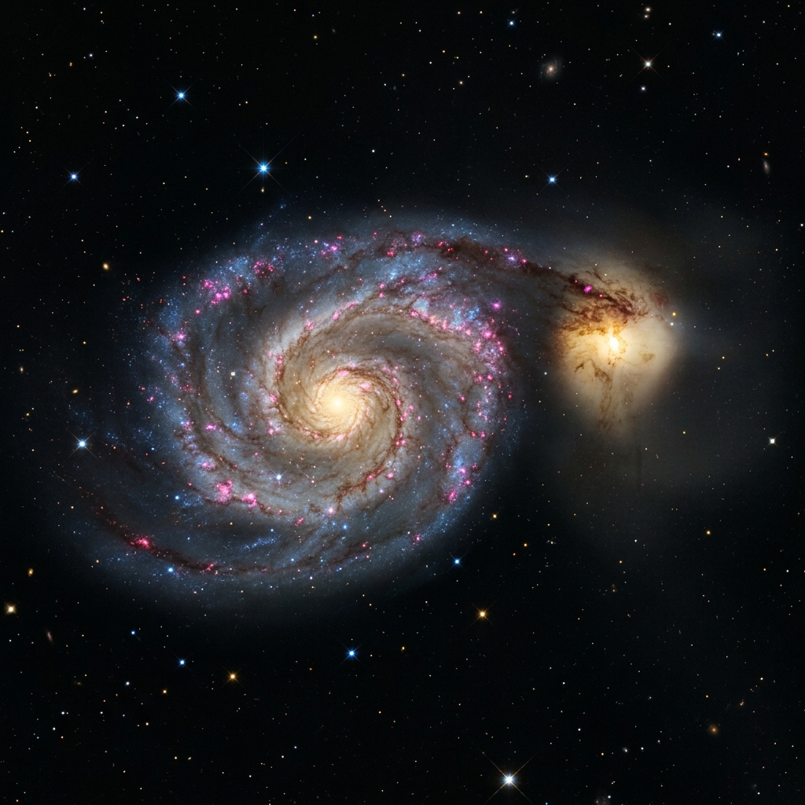

Cum Calculăm Rezoluția Optică în Astrofotografie
În spatele fiecărei galaxii și nebuloase fotografiate cu claritate chirurgicală se află o relație matematică între distanța focală efectivă a telescopului și dimensiunea fizică a pixelului.

Ce Înseamnă o Secundă de Arc (1")?
Pe cerul nopții nu putem măsura obiectele în milimetri sau kilometri, ci în unghiuri aparente. O secundă de arc (1") este a 3.600-a parte dintr-un singur grad:
🔍 Comparator Interactiv de Scară Unghiulară
Trage de slider pentru a face zoom de la Luna Plină (1.800") până la 1 Pixel IMX533 (1.36")
Astrograful Newton 6" (150/600 mm)
Un telescop reflector Newtonian de 6 inci cu focala de 600 mm este un veritabil „aspirator de fotoni” (f/4 nativ). Dar care este rolul exact al aperturii față de cel al focalei?
Apertura de 6" (150 mm) determină luminozitatea (f/3.8) și limita fizică de difracție (0.77"), însă în formula rezoluției pe pixel intră exclusiv focala efectivă (570 mm)!
⚡ Simulare Live Ray-Tracing: Drumul Fotonilor în Tubul Newton
Plimbă cursorul peste tubul optic pentru a inspecta razele și focalizarea
Rolul Dublu al Corectorului de Comă 0.95×
Oglinzile parabolice rapide (f/4) focalizează perfect razele din centrul imaginii, dar razele venite oblic (spre colțurile senzorului) formează stele alungite ca niște comete (aberația de comă).
Lentilele corectorului compensează diferența de drum optic pentru razele periferice, oferind stele rotunde pe toată diagonala de 16 mm a senzorului IMX533.
Scurtează focala cu 5% (600 → 570 mm), mărind ușor rezoluția numerică de la 1.29"/px la 1.36"/px.

Senzorul Răcit Sony IMX533
Considerat unul dintre cei mai echilibrați senzori moderni pentru astrofotografie, Sony IMX533 este un cip CMOS pătrat cu iluminare din spate (BSI — Back-Illuminated), montat într-o cameră dedicată cu răcire Peltier (TEC).
Un fir de păr uman are ~75 µm grosime — pe lățimea lui încap 20 de pixeli IMX533 unul lângă altul!
Calculul Pas cu Pas: 1.36" / pixel
| Configurație | Focală | Raport f/ | Rezoluție ("/px) | Câmp Vizual (FOV) |
|---|---|---|---|---|
| Nativ (Fără corector) | 600 mm | f/4.00 | 1.293" / px | 1.08° × 1.08° (64.8') |
| ✅ Cu Corector 0.95× | 570 mm | f/3.80 | 1.361" / px | 1.14° × 1.14° (68.2') |
🧮 Calculator Optic Live
Trage de slidere pentru a recalcula instantaneu rezoluția
Criteriul Nyquist & Seeing-ul Atmosferic
Atmosfera Pământului estompează fiecare stea într-un disc turbulent măsurat prin FWHM (Full Width at Half Maximum). Conform teoremei de eșantionare Nyquist-Shannon, pentru a rezolva fidel o stea rotunjită, diametrul FWHM al seeing-ului trebuie eșantionat pe 2 până la 3 pixeli.
Steaua cade pe 1 singur pixel → stele „pătrățoase” (blocky).
Stele perfect rotunde și raport semnal-zgomot (SNR) maxim!
Lumina se împrăștie pe prea mulți pixeli fără detalii noi.
🎯 Simulare Live 60fps: Scintilația Stelei pe Matricea IMX533
Observă cum turbulența atmosferică mișcă în timp real fotonii pe grila de pixeli de 3.76 µm
Fereastra de 1.14° × 1.14° pe Cerul Profund
Cu o rezoluție de 1.36"/pixel și un câmp vizual pătrat de 68.2' × 68.2' (de peste 4 ori suprafața Lunii pline!), acest sistem este o mașinărie extraordinară pentru galaxii, roiuri globulare și nebuloase:
„Descoperă lumina ascunsă în întunericul etern al universului, surprinsă de ochiul digital al telescopului!”

Lumina Ascunsă în Întunericul Etern
Fotoni călătoriți mii de ani-lumină, surprinși de ochiul digital al telescopului. Vizualizează în mod Thumbnail, descarcă fiecare imagine la rezoluție originală sau lansează Proiecția Slideshow cu Zoom & Derulare la 100% Crop.